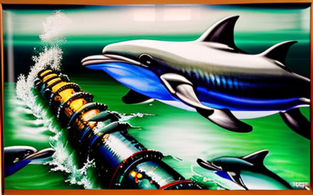

Ο υποθαλάσσιος αγωγός πατάτων και τα δελφίνια
Αρχική Σελίδα
Πίνακας Περιεχομένων
Η κατασκευή του αγωγού

Στα βάθη του ωκεανού, ένα τεράστιο έργο βρισκόταν σε εξέλιξη. Μια ομάδα μηχανικών κατασκεύαζαν έναν υποθαλάσσιο αγωγό για τη μεταφορά ενός πολύτιμου αγαθού μεταξύ δύο ηπείρων, τις τηγανητές πατάτες. Ο αγωγός ήταν ο μεγαλύτερος του είδους του, με τεράστια έκταση στον πυθμένα του ωκεανού, συνδέοντας τα χωράφια πατάτας του Παλαιού Κόσμου με τις αλυσίδες ταχυφαγείων του Νέου Κόσμου.
Το λάδι που χρησιμοποιούταν για το τηγάνισμα των πατατών δεν ήταν ένα συνηθισμένο λάδι. Ήταν ένα μείγμα καρύδας και φοινικέλαιου, ειδικά σχεδιασμένο ώστε παρέχει την τέλεια τραγανότητα σε κάθε μπουκιά. Αυτό το λάδι ήταν η ψυχή του αγωγού και κάθε πτυχή της παραγωγής και της μεταφοράς του υπόκειτο σε σχολαστικό έλεγχο.
Οι μηχανικοί παρακολουθούσαν τη θερμοκρασία και την πίεση του λαδιού καθώς έρεε μέσω του αγωγού, διασφαλίζοντας ότι παρέμενε βέλτιστο για τηγάνισμα. Ο αγωγός ήταν επενδεδυμένος με αισθητήρες που μετρούσαν το ιξώδες του λαδιού, επιτρέποντας στους μηχανικούς να κάνουν προσαρμογές απέυθείας στον ρυθμό ροής και να αποτρέψουν τυχόν φραγή.
Ο αγωγός σχεδιάστηκε επίσης για να αντέχει την πίεση σύνθλιψης των βάθεων των ωκεανών και οι μηχανικοί εργάζόντουσαν ακούραστα για να ενισχύσουν τα μεταλλικά τοιχώματα και τις αρθρώσεις. Κάθε μπουλόνι περισφίγγοταν με ακρίβεια και κάθε συγκόλληση δοκιμάζοταν για αντοχή.
Καθώς ο αγωγός πλησίαζε στην ολοκλήρωση, οι μηχανικοί έκαναν μια βουτιά για να επιθεωρήσουν τα τελικά τμήματα. Στα θολά βάθη του ωκεανού, θαύμασαν το τεράστιο μέγεθος και την πολυπλοκότητα του αγωγού. Ήταν ένα έργο τέχνης, και μια απόδειξη της ανθρώπινης ευρηματικότητας.
Κι όμως, υπήρχε μια αίσθηση ανησυχίας μεταξύ των μηχανικών. Γιατί αυτός ο αγωγός δεν ήταν απλώς ένα μέσο μεταφοράς πατάτας, ήταν σύμβολο της κυριαρχίας του ανθρώπου στη φύση. Το λάδι στον αγωγό θα έρεε για τα επόμενα χρόνια, τροφοδοτώντας την ακόρεστη πείνα των μαζών για την απόλαυση γρήγορου φαγητού.
Το πετρέλαιο στον αγωγό θα έφερνε ευημερία στον Παλαιό Κόσμο και τον Νέο και όταν άρχισε να μεταφέρει το πολύτιμο φορτίο του, οι μηχανικοί παρακολουθούσαν με περηφάνια. Διότι είχαν δημιουργήσει κάτι επικό και τέλειο.Το λάδι έρεε και οι τηγανητές πατάτες μετεφέροντο ανάμεσα δύο ηπείρων, έν μέσω ενός ατελείωτου ποταμιού λαδιού.
Η επίθεση των δελφινιών

Ήταν μια όμορφη μέρα στον ωκεανό, ο ήλιος έλαμπε και το νερό ήταν ήρεμο. Αλλά ξαφνικά, η γαλήνη διαταράχθηκε από έναν δυνατό θόρυβο που προερχόταν από τον υποθαλάσσιο αγωγό. Οι μηχανικοί έμειναν έκπληκτοι βλέποντας ότι ο αγωγός δέχτηκε επίθεση από μια ομάδα δελφινιών. Αυτά δεν ήταν απλά δελφίνια, ήταν έξυπνα δελφίνια, που είχαν μάθει να κλέβουν πατάτες και τοματοπολτό από τον αγωγό.
Οι μηχανικοί παρακολουθούσαν με δέος καθώς τα δελφίνια συνεργάζονταν, με την ευφυΐα και την ευκινησία τους για να διεισδύσουν στον αγωγό. Κολυμπούσαν μέχρι τον αγωγό, δάγκωναν μια πατάτα στο στόμα τους και ξέφευγαν μαζί της, αποφεύγοντας επιδέξια την ισχυρή ροή του λαδιού. Ήταν τόσο γρήγορα και ευκίνητα που οι μηχανικοί πάλευαν να παρακολουθήσουν τις κινήσεις τους.
Οι μηχανικοί σύντομα κατάλαβαν ότι τα δελφίνια δεν έκλεβαν απλώς τις πατάτες, αλλά και τον τοματοπολτό που μεταφέρονταν μαζί με το λάδι. Ήταν έξυπνα πλάσματα που είχαν καταλάβει ότι ο τοματοπολτός ήταν το τέλειο συνοδευτικό για τις πατάτες και ήταν αποφασισμένα να κλέψουν και το γαρνίρισμα.
Οι μηχανικοί έμειναν έκπληκτοι από την εξυπνάδα και την επινοητικότητα των δελφινιών, αλλά ήξεραν επίσης ότι έπρεπε να τα σταματήσουν. Γρήγορα κατέληξαν σε ένα σχέδιο για να ασφαλίσουν τον αγωγό και να εμποδίσουν τα δελφίνια την πρόσβαση στις πατάτες και τον τοματοπολτό.
Τοποθέτησαν ισχυρά δίχτυα γύρω από τον αγωγό για να εμποδίσουν την δίοδο των δελφινιών και πρόσθεσαν φρουρούς για να περιπολούν την περιοχή και να διώχνουν τους εισβολείς. Οι μηχανικοί ανέπτυξαν επίσης νέες τεχνολογίες για να ανιχνεύσουν την παρουσία των δελφινιών και να ειδοποιούν τους φρουρούς για τις κινήσεις τους.
Παρά τα μέτρα αυτά, τα δελφίνια συνέχισαν να επιτίθενται στον αγωγό, αποφασισμένα να βάλουν στα φάνε τις πολύτιμες πατάτες και το τοματοπολτό. Οι μηχανικοί βρίσκονταν σε μια συνεχή μάχη για να αποτρέψουν την κλοπή του φορτίου απο τα δελφίνια και η κατάσταση σύντομα έγινε πόλεμος μεταξύ ανθρώπων και θηρίων.
Η μάχη μαίνονταν, και οι μηχανικοί άρχισαν να καταλαβαίνουν την πραγματική φύση των δελφινιών. Δεν ήταν απλώς έξυπνα πλάσματα, αλλά και παιχνιδιάρικα και περίεργα, με μια αίσθηση κακίας και περιπέτειας. Οι μηχανικοί άρχισαν να σέβονται τα δελφίνια, καθώς θαύμαζαν την εξυπνάδα και την αποφασιστικότητά τους.
Η καταστροφή του αγωγού

Ο πόλεμος μεταξύ των μηχανικών και των έξυπνων δελφινιών είχε φτάσει σε κρίσιμο σημείο. Η εταιρεία γρήγορου φαγητού που ανήκε στον αγωγό αντιμετώπιζε τεράστιες απώλειες λόγω των συνεχών επιδρομών των δελφινιών και ήταν αποφασισμένοι να βάλουν ένα τέλος στο πρόβλημα. Αποφάσισαν να καταστρέψουν τον αγωγό, άπαξ και δια παντός.
Η εταιρεία ταχυφαγείων έστειλε ένα τεράστιο πλοίο στην τοποθεσία, φορτωμένο με εκρηκτικά και ένα πλήρωμα ειδικών επιφορτισμένους με την ανατίναξη του αγωγού. Οι μηχανικοί παρακολούθησαν με τρόμο καθώς το πλοίο πλησίαζε, γνωρίζοντας ότι ο αγωγός επρόκειτο να καταστραφεί και μαζί του η εργασία τους.
Καθώς το πλοίο έφτασε στον αγωγό, το πλήρωμα άρχισε τις προετοιμασίες για τις εκρηκτικές γομώσεις. Τοποθέτησαν προσεκτικά τις γομώσεις σε όλο το μήκος του αγωγού, διασφαλίζοντας ότι η έκρηξη θα ήταν αρκετά ισχυρή ώστε να τον καταστρέψει πλήρως.
Οι μηχανικοί δεν μπορούσαν να κάνουν τίποτε άλλο από το να παρακολουθούν καθώς οι γομώσεις πυροδοτούνταν και ο αγωγός διαλύθηκε, στέλνοντας ένα τεράστιο σωρό λάδι, πατάτες και τοματοπολτό στην ανοιχτή θάλασσα. Το λάδι, οι πατάτες και ο τοματοπολτός έρρεαν εκτός του αγωγού, χύθηκαν στον ωκεανό, δημιουργώντας μια τεράστια κηλίδα που εκτεινόταν για χιλιόμετρα.
Οι μηχανικοί τρομοκρατήθηκαν από το θέαμα και συνειδητοποίησαν γρήγορα το μέγεθος της καταστροφής που είχαν εξαπολύσει. Το λάδι, οι πατάτες και ο τοματοπολτός όχι μόνο θα βλάψουν τον ωκεανό, αλλά θα έχουν επίσης καταστροφικές επιπτώσεις στην τροφική αλυσίδα, επηρεάζοντας τα πάντα, από το μικρότερο πλαγκτόν έως τις μεγαλύτερες φάλαινες.
Η απώλεια της γεύσης

Μέρες μετά την καταστροφή του αγωγού, δύο άνδρες κάθισαν σε ένα ταχυφαγείο και απελάμβαναν τα χάμπουργκερ τους. Αλλά καθώς δάγκωσαν τα μπιφτέκια τους, γρήγορα συνειδητοποίησαν ότι κάτι έλειπε. Δεν υπήρχαν πατάτες για να βουτήξουν στη σάλτσα, ούτε τραγανές τηγανητές μπουκιές για να αναδείξει την γεύση του γεύματός τους.
Οι άντρες κοιτάχτηκαν, νιώθοντας και οι δύο ένα αίσθημα δυσαρέσκειας. Ανυπομονούσαν για ένα γεύμα με πατάτες όλη μέρα, αντί αυτού αντικαταστάθηκαν από ένα άτονο χάμπουργκερ απο το οποίο εξέλλιπε η τραγανή και ικανοποιητική γεύση που ανέμεναν.
Ένας από τους άνδρες πήρε μια βαθιά ανάσα προσπαθώντας να ηρεμήσει. Ήξερε ότι δεν ήταν το τέλος του κόσμου, ότι υπήρχαν άλλα πράγματα να απολαύσει στη ζωή. Αλλά καθώς έπιανε άλλη μια μπουκιά από το χάμπουργκερ, δεν μπορούσε να μην νιώσει ότι κάτι του έλειπε.
Ο άλλος έγνεψε καταφατικά, γνωρίζοντας ακριβώς τι ένιωθε ο φίλος του. Είχε ζήσει το ίδιο και πάλευε να συμβιβαστεί με την απουσία των πατατών. Ήπιε μια γουλιά από το αναψυκτικό του, προσπαθώντας να ξεπλύνει την αδιάφορη γεύση του χάμπουργκερ, αλλά μάταια.
Οι δύο άνδρες συνέχισαν να τρώνε σιωπηλοί τα χάμπουργκερ τους, χαμένοι και οι δύο στις σκέψεις τους. Σκέφτηκαν την καταστροφή που είχε συμβεί στον αγωγό, για τα έξυπνα δελφίνια που είχαν προκαλέσει τόσα προβλήματα και για την εταιρεία ταχυφαγείων που τα κατέστρεψε όλα. Η ανυπαρξία των πατάτων ήταν ασήκωτη.
Καθώς τελείωσαν το γεύμα τους και έφευγαν από το ταχυφαγείο, οι δύο άντρες δεν μπορούσαν να μην αισθανθούν μια αίσθηση κενού. Είχαν έρθει αναζητώντας ένα χορταστικό γεύμα, και αντί αυτού συνάντησαν μόνο απογοήτευση. Έφυγαν από το εστιατόριο, με τις σκέψεις τους βαριές, καθώς συλλογίζονταν τον κόσμο στον οποίο ζούσαν και τον αντίκτυπο των πράξεών τους στον πλανήτη και στα πλάσματα του.
Η αναβίωση της αγοράς πατάτας

Καθώς διαδόθηκε η είδηση της καταστροφής του αγωγού, ο κόσμος συγκλονίστηκε από τις συνέπειες του γεγονότος. Η καταστροφή του αγωγού είχε διακόψει μια σημαντική πηγή πατάτας, με αποτέλεσμα οι τιμές να εκτοξευθούν στα ύψη καθώς η ζήτηση για τις νόστιμες τηγανητές μπουκιές ξεπέρασε την προσφορά.
Η βιομηχανία γρήγορου φαγητού επλήγη σκληρά από τις αυξήσεις των τιμών, καθώς οι πατάτες έγιναν σπάνιο και πολύτιμο προϊόν. Οι εταιρείες προσπάθησαν να βρουν εναλλακτικές πηγές πατάτας, αλλά πολλές δεν κατάφεραν να καλύψουν τη ζήτηση των πελατών τους, οι οποίοι είχαν συνηθίσει να σερβίρουν τις πατάτες τους σε κάθε γεύμα. Ως απάντηση στην έλλειψη, μια νέα ναυτιλιακή βιομηχανία εμφανίστηκε, επικεντρωμένη στη μεταφορά πατάτας από την μια ήπειρο στην άλλη.
Τα πλοία ήταν φορτωμένα με σάκους φρεσκοκομμένων πατάτων, πλέοντας διατλαντικό ταξίδι στον ωκεανό για να μεταφέρουν το πολύτιμο φορτίο στα εστιατόρια. Η ναυτιλιακή βιομηχανία σημείωσε άνθηση, καθώς η ζήτηση για πατάτες συνέχισε να αυξάνεται και η τιμή της πατάτας επίσης.
Οι επιχειρηματίες και οι επενδυτές είδαν τις δυνατότητες για κέρδος και διοχέτευσαν χρήματα στη βιομηχανία, κατασκευάζοντας μεγαλύτερα και πιο αποτελεσματικά πλοία και επενδύοντας σε νέες τεχνολογίες για να επιταχύνουν τη μεταφορά πατάτας από το ένα μέρος στο άλλο. Καθώς η ναυτιλιακή βιομηχανία άνθιζε, η οικονομία μεταμορφώθηκε. Δημιουργήθηκαν νέες θέσεις εργασίας, καθώς χρειάζονταν εργάτες για την καλλιέργεια, τη συγκομιδή και τη μεταφορά των πατατών.
Οι εταιρείες που πάλευαν να συμβαδίσουν με τη ζήτηση για πατάτες έγιναν ξανά κερδοφόρες και η βιομηχανία γρήγορου φαγητού μπόρεσε και πάλι να προσφέρει στους πελάτες τις νόστιμες τηγανητές μπουκιές που είχαν αγαπήσει. Η καταστροφή του αγωγού είχε αλλάξει τον κόσμο για πάντα, αλλά στο τέλος, έφερε μια νέα εποχή ευημερίας, καθώς το υλικό της πατάτας έγινε πολύτιμο αγαθό και η ναυτιλιακή βιομηχανία ευνοήθηκε οικονομικά όταν κάλυψε τη ζήτηση.
Και καθώς τα πλοία συνέχιζαν να διασχίζουν τον ωκεανό, μεταφέροντας το πολύτιμο φορτίο τους με πατάτες, οι άνθρωποι σε όλο τον κόσμο μπορούσαν να απολαύσουν την απλή ευχαρίστηση της βύθιστις πατάτες τους σε έναν πλούσιο και πικάντικο τοματοπολτό.